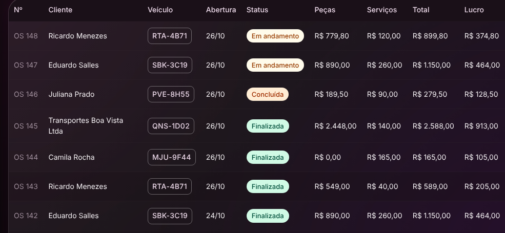
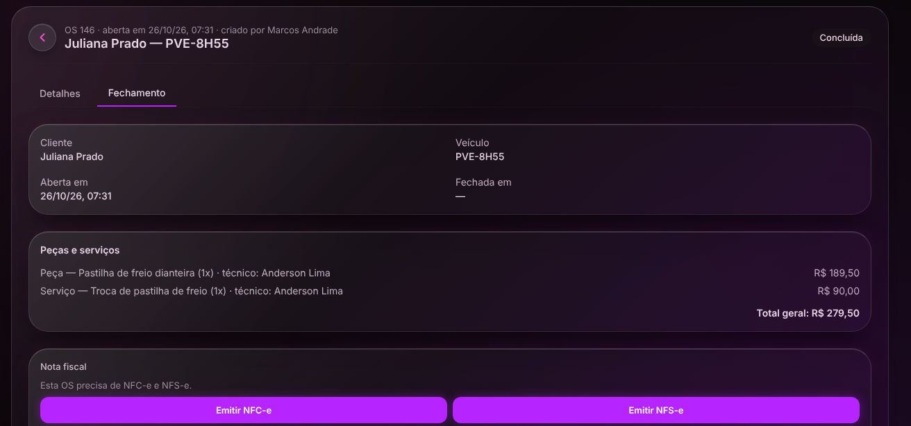
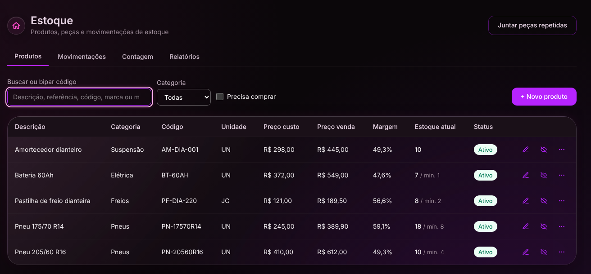

Tudo num lugar só
- Ordem de serviço, estoque, caixa, contas e nota fiscal no mesmo programa.
- O que entra na ordem de serviço já vale pro caixa, pro estoque e pra nota.
- Feito pra quem não entende de computador.
Sakura System · AutoCenter Edition3
O fim do retrabalho e da bagunça no caixa.
Um sistema só pra controlar o pátio, a loja e a nota fiscal.



Estamos construindo, entre outras coisas:
A ordem é decidida pelo que as lojas mais pedem.
Ficou alguma dúvida, ou quer ver o sistema funcionando? Fale com a equipe da Sakura Corp.